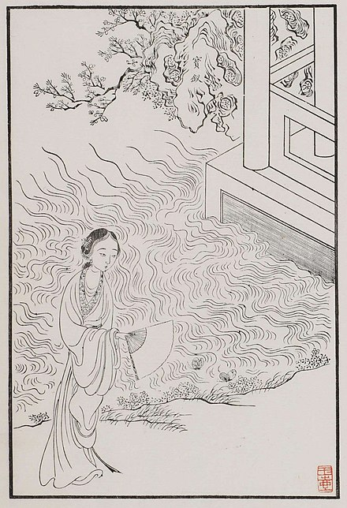
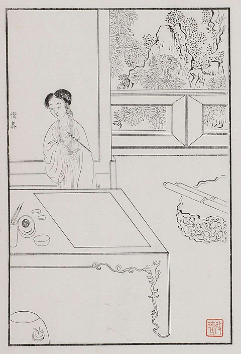
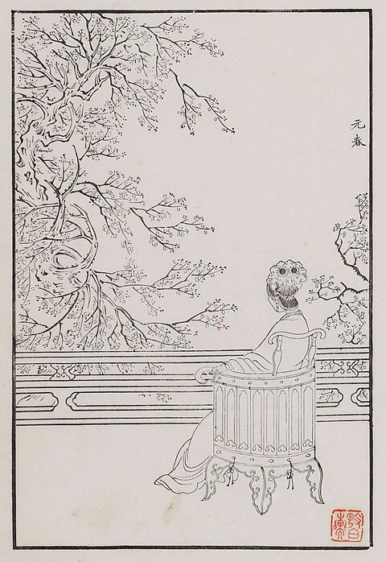
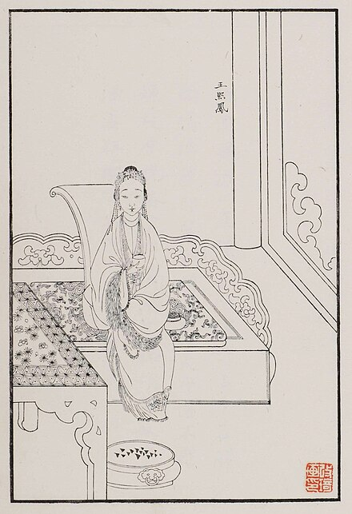
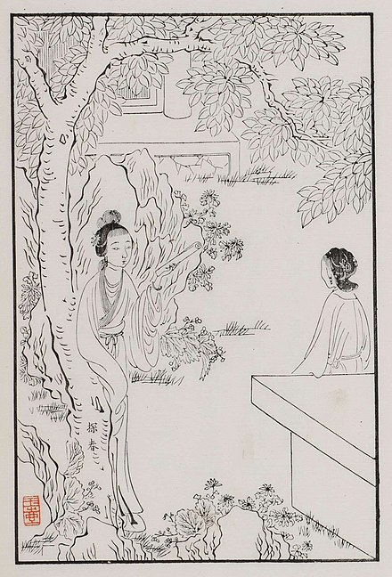
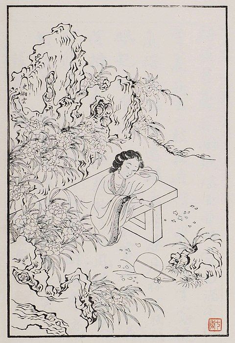
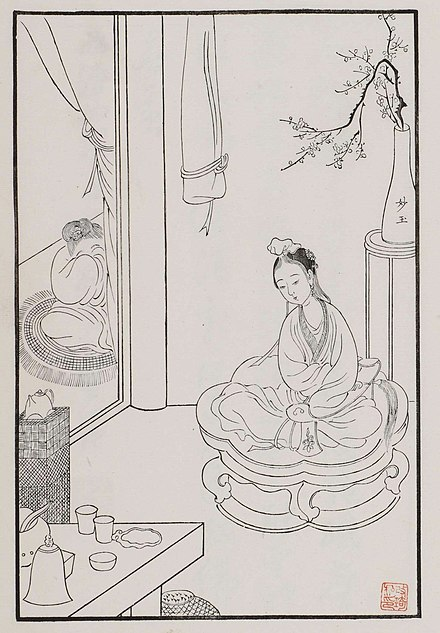

人物介紹
《紅樓夢》是讚頌女性的作品，而“金陵十二釵”則是《紅樓夢》裡最出色，最具有特點的十二位女性。她們分別是薛寶釵、林黛玉、賈元春、賈探春、妙玉、賈迎春、賈惜春、王熙鳳、賈巧姐、李紈和秦可卿。曹雪芹給予她們分別安排了代表花。將美人比作鮮花再正常不過，然而，曹雪芹卻很有創意地將美人與花一一對應，並且將她們的性格和命運與花聯繫在一起。接下來就讓我們來探索曹雪芹筆下人物安排的巧思與奧祕。
林黛玉--芙蓉花
【判詞】
可嘆停機德，堪憐詠絮才。玉帶林中掛，金簪雪裡埋。
人物介紹：
林黛玉是《紅樓夢》裡的女主角，金陵十二釵之一。字顰卿，別號瀟湘妃子。林黛玉前世是一株絳珠仙草，為了還淚而來了人間。在賈府，林黛玉確是最愛流淚的那一個，因為情，她為寶玉流了不知多少淚水。正如應曲文：「想眼中能有多少淚珠兒，怎經得秋流到冬，春流到夏？」而其代表花為芙蓉花，因為黛玉和芙蓉一樣美麗，和芙蓉一樣嬌弱，和芙蓉一樣冰清玉潔。

薛寶釵--牡丹花
【判詞】
可嘆停機德，堪憐詠絮才。玉帶林中掛，金簪雪裡埋。
人物介紹：
薛寶釵號蘅蕪君，為書香舊族，其母王氏與賈寶玉之母為姐妹。她性格淡然婉轉，舉止大方，雖美麗端莊，但城府極深，是現實功利主義的擁護者。平時待人處事總是克己復禮，將自己的情感封閉起來，因此顯得有些拘束，甚至冷漠，有了「任是無情也動人」的評論。而書中對於寶釵衣妝淡雅、服「冷香丸」、姓「薛（雪）」等描寫，都可看作是對其「冷」的個性的暗示。其代表花為牡丹花，因為寶釵積極入世，穩重幹練，形容艷麗，像極了牡丹。
賈迎春--迎春花
【判詞】
子系中山狼，得志便猖狂；金閨花柳質，一載赴黃粱。
人物介紹：
迎春花

賈惜春--牡丹花
【判詞】
勘破三春景不長，緇衣頓改昔年妝；可憐繡戶侯門女，獨臥青燈古佛傍
人物介紹：
曼佗羅
巧姐--牽牛花
【判詞】
勢敗休云貴，家亡莫論親。偶因濟劉氏，巧得遇恩人。
人物介紹：
牽牛花

賈元春--曇花
【判詞】
二十年來辨是誰，榴花開處照宮闈；三春爭及初春景，虎兕相逢大夢歸
人物介紹：
曇花
李紈--梅花
【判詞】
桃李春風結子完，到頭誰似一盆蘭？為冰為水空相妒，枉與他人作笑談
人物介紹：
梅花

王熙鳳--罌粟花
【判詞】
凡鳥偏從末世來，都知愛慕此生才。一從二令三人木，哭向金陵事更哀
人物介紹：
罌粟花

賈探春--杏花
【判詞】
才自精明志自高，生於末世運偏消。清明涕送江邊望，千里東風一夢遙
人物介紹：
杏花
秦可卿--仙客來
【判詞】
情天情海幻情身，情既相逢必主淫；謾言不肖皆榮出，造釁開端實在寧
人物介紹：
仙客來

史湘雲--海棠
【判詞】
富貴又何為，襁褓之間父母違；展眼吊斜暉，湘江水逝楚雲飛。
人物介紹：
海棠

妙玉--梨花
【判詞】
欲潔何曾潔，云空未必空！可憐金玉質，終陷淖泥中。
人物介紹：
梨花